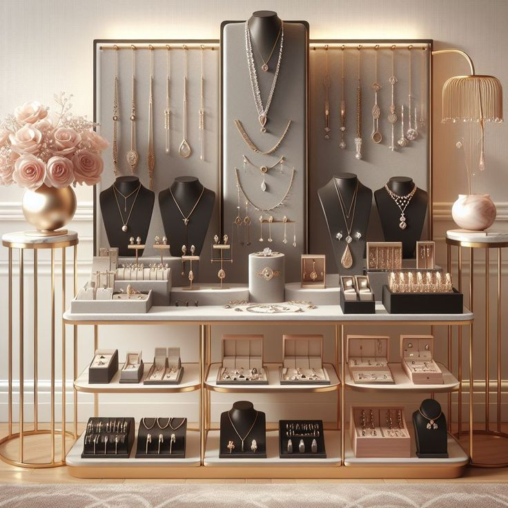

Joyería Tiffany S.A


Anillos

Aretes

Collares

Pulseras

Una gema también llamada piedra preciosa, es una roca, mineral, vidrio o producto orgánico de origen natural, que al ser cortado o pulido se puede usar en la confecición de joyas u objetos artísticos. Las piedras peruanas más demandadas, en el mundo son la crisocola(conocida también como "turquesa peruana") y los ópalos andino (azul) y rosado, según el GIA, Bedón y Carlos Ballinas, un empresario peruano de artesanías de piedras preciosas, que vive hace tres décadas en Orleans, Francia. En el Perú no existen piedras preciosas, solo semipreciosas.El origen y la trazabilidad de los materiales con los que creamos las joyas es un aspecto imprescindible en nuestra concepción de la joyería responsable. Esto implica preguntarnos primero qué hay detrás de todos y cada uno de los metales preciosos y las gemas que utilizamos para, después, buscar opciones de abastecimiento responsable en iniciativas de minería artesanal y de pequeña escala que aplican criterios de comercio justo, desarrollo comunitario y respeto al medio ambiente.
Piedras Preciosas
- Diamante
- Rubi
- Zafiro
- Esmeralda
Piedras semi preciosas
- Rodocrosita
- Jaspe
- Obsidiana
- Serpentina
Comercio
- Costo elevado
- Sudafrica
- Gemas vs Joyas
- Valor en el mercado
